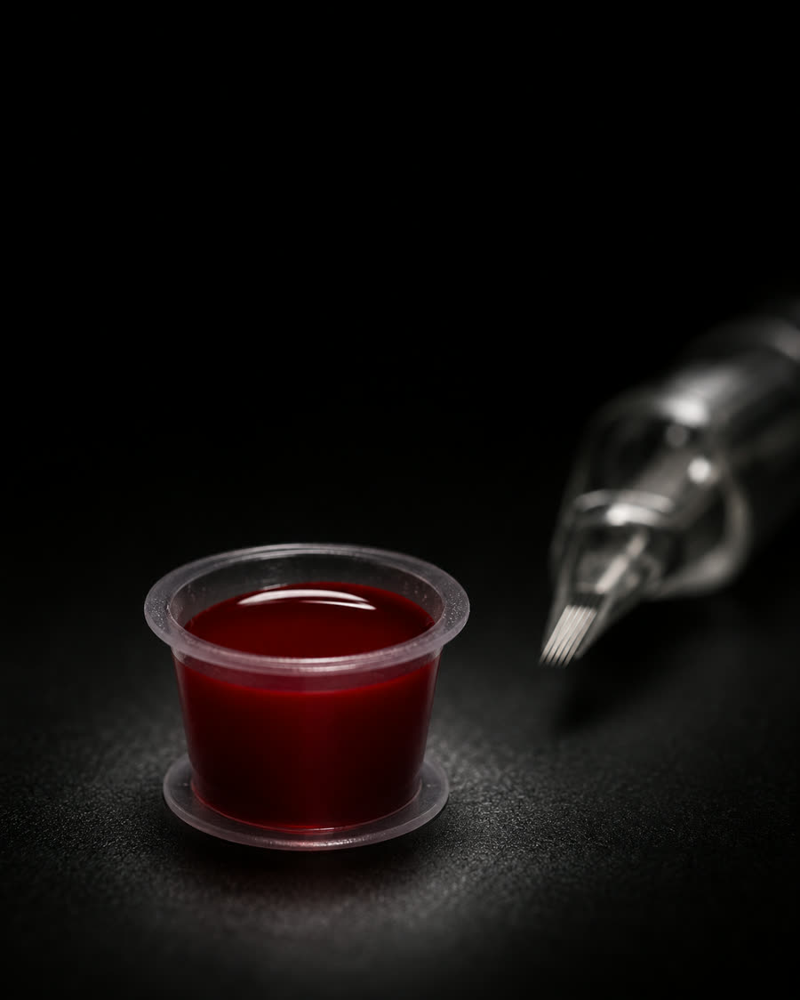
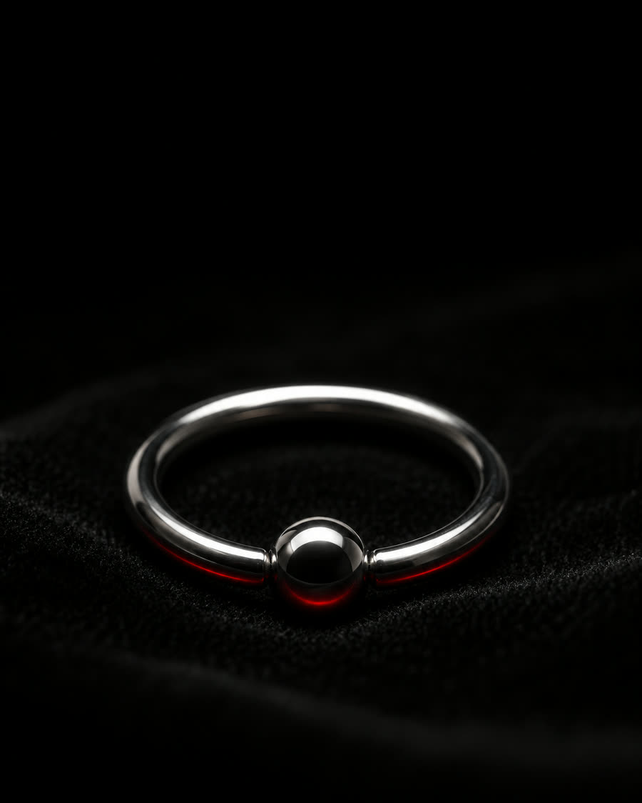

Безкоштовні консультації
— біо профілю @balak_tattoostudio

Прийти з ідеєю й спершу поговорити з майстром — нормальний початок: консультація в Balak нічого не коштує. Запис на сеанс і на консультацію студія веде в одному місці:
Відкрити Direct студії«Для запису на сеанс або консультацію звертайтеся в Direct»
— допис студії від 11.11
Пірсинг

Друга половина студії. У біо — «Професійні тату та пірсинг». Які проколи роблять і які прикраси є в наявності, сайт поки не знає — це скаже майстер у Direct.
Тут ляже перелік проколів і прикрас від студії.
Майстри
«Команда професіоналів» — з біо. Відкрито поки одне ім'я: з допису від 11.11. Решту студія впише сама — у профілі для цього є хайлайт «КОМАНДА».
- Настя майстриня «Майстриня Настя / один сеанс» допис ↗
- Ім'я майстра стиль і 3 роботи — додасть студія порожнє місце
- Ім'я майстра стиль і 3 роботи — додасть студія порожнє місце
Роботи
530 публікацій у профілі @balak_tattoostudio Тут ляже добірка робіт, яку вибере студія. Чужі фото ми не копіюємо — поки що роботи дивіться в Instagram ↗Хайлайти профілю: FEST 2026 · ПРОЦЕС · КОМАНДА · ВІДГУКИ · КЛІЄНТИ · АДРЕСА
Адреса й час
Драгоманова 2Б
Київ, вулиця Михайла Драгоманова, 2Б — біля станції метро «Позняки»
- Час роботи
- 10:00–20:00Так у дописі студії; дні тижня там не вказані — уточніть у Direct.
- Запис
- через DirectСеанс і консультація — в одному діалозі.
- Консультація
- безкоштовна«Безкоштовні консультації» — біо профілю.
У мітці локації того ж допису стоїть «River Mall». Перед першим візитом спитайте в Direct, яким входом іти.